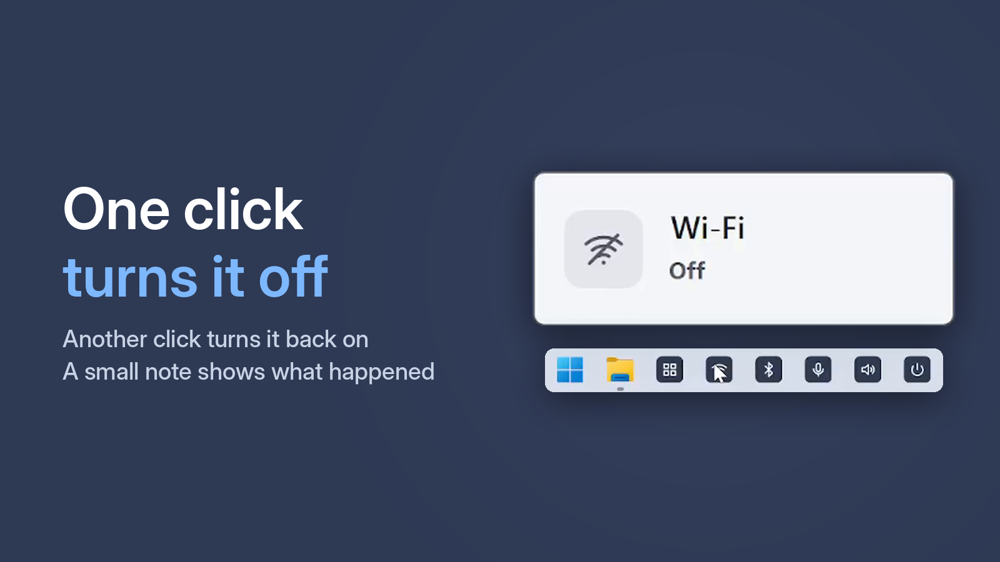
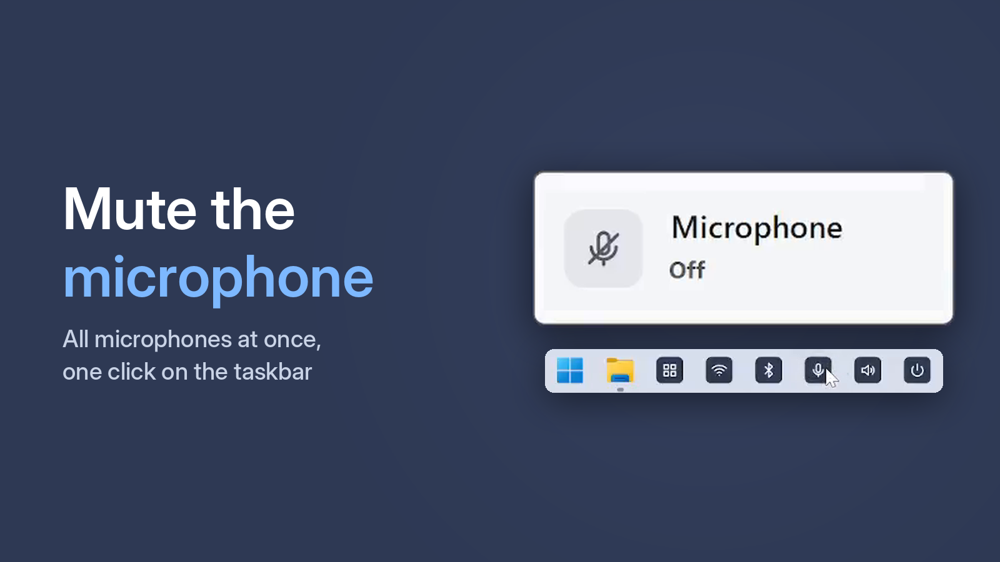
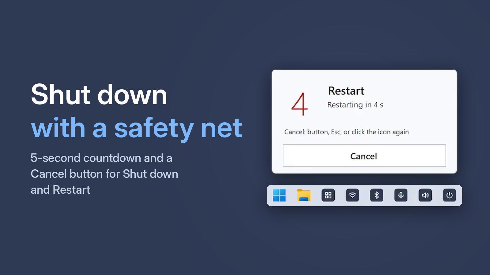
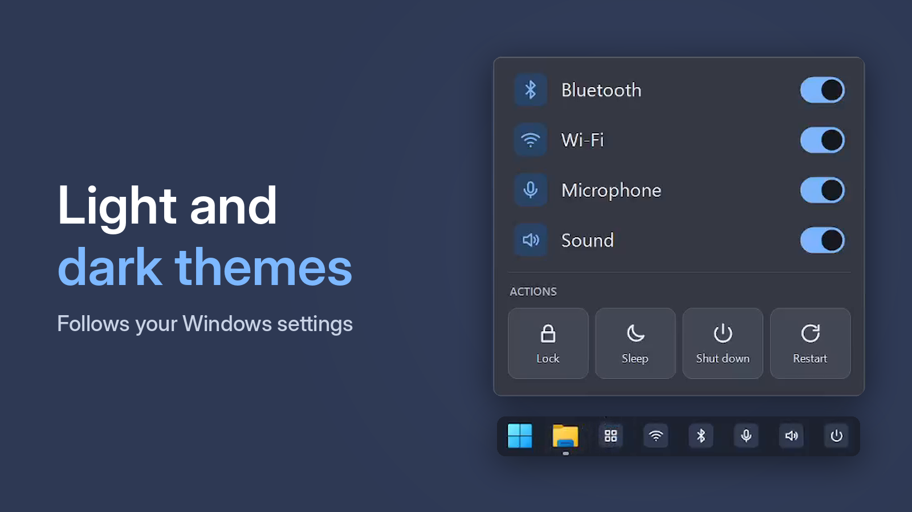

Everyday Windows switches — one click away
One Click Switcher puts the settings you reach for every day on your taskbar, one click each. Click and Wi-Fi turns off; click again and it is back on. Bluetooth, the microphone and the sound work the same way — plus Lock, Sleep, Shut down and Restart.
Get it from Microsoft StoreFree · Windows 10 and 11 · no ads

What it does
Wi-Fi
Turn wireless networking on or off.
Bluetooth
Turn Bluetooth on or off with one click.
Microphone
Mute all microphones at once, and unmute them.
Sound
Mute and unmute your main audio device.
Lock
Lock the PC when you step away.
Sleep
Put the computer to sleep.
Shut down
5-second countdown you can cancel.
Restart
Same countdown and cancel, no menus.
The Status window: everything in one place
Open Status and you see at a glance what is on and what is off. You can switch anything right in the window — no hunting for separate shortcuts or digging through Windows Settings.
- Wi-Fi, Bluetooth, microphone and sound status at a glance
- Turn any of them on or off with a click right in the window
- Lock, Sleep, Shut down and Restart are there too
- Shut down and Restart start a 5-second countdown with a Cancel button

What it looks like



Who it is for
Calls and remote work
Mute the microphone in a second — every microphone at once, even when the call window is minimized.
Laptops on the go
Turn Wi-Fi and Bluetooth off in one click when you don’t need them, and back on just as fast.
Wireless headphones
Turn Bluetooth on before you connect and off when you’re done — no hunting for a Quick Settings tile.
Office and shared PCs
Stepping away from your desk? One click and the PC is locked.
Beginners and older relatives
One clear button instead of the Start menu and Settings. An accidental shutdown can be cancelled.
Fans of a clean PC
No tray icon, no background process, no account, no ads. The app runs only when you click.
Free · Windows 10 and 11 · no ads
How you do it in Windows without the app
You can do all of this with built-in tools — it just takes longer. Compare:
| Task | Windows on its own | One Click Switcher |
|---|---|---|
| Wi-Fi | Network icon in the corner → Wi-Fi tile. On Windows 10, through the Action Center. | One click on the taskbar |
| Bluetooth | Quick Settings or Action Center → Bluetooth tile, if it is there. Otherwise through Settings. | One click |
| Microphone | The mute button in each call app separately, or Settings → System → Sound → input device. | One click mutes every microphone at once |
| Sound | Volume icon → speaker button. | One click |
| Lock | Win + L, or Start → your profile → Lock. | One mouse click |
| Sleep | Start → Power → Sleep. | One click |
| Shut down and Restart | Start → Power → pick one. No way to cancel. | One click and 5 seconds to change your mind |
| What is on right now | Open Quick Settings and Settings one by one. | The Status window shows everything at once |
Free · Windows 10 and 11 · no ads
How it works
Install from Microsoft Store
Free, no account, no setup wizard.
Pick the buttons you need
Choose only what you use and pin the shortcuts to the taskbar.
Click
One click switches it; a short sound and a small notice confirm it.
Why it feels better
Nothing running in the background
The app starts on click, does its job and exits. No tray icon, no startup entry, no memory used.
No surprise shutdowns
Shut down and restart start a 5-second countdown. Changed your mind? Press Cancel, Esc, or click the same button again.
You see that it worked
A click sound and a small notice: “Wi-Fi on”, “Microphone muted”. The Status button shows everything at once.
Looks like Windows
Light and dark themes follow your Windows settings. English and Russian interface.
Zero data
One Click Switcher does not collect, store or send any data. No ads, no analytics, no account, no internet connection.
Privacy policy →How-to guides
FAQ
Is it really free?
Yes. No ads, no paid tier, no trial.
Why taskbar buttons instead of a tray icon?
The taskbar is always visible and one click away. Many people never open the tray.
Can I add buttons later?
Yes. Open the app again and tick the functions you want; the shortcuts appear on the desktop, ready to pin.
Can a shutdown happen by accident?
No: there is a 5-second countdown first, and you can cancel with a button, Esc, or by clicking the same icon again.
My webcam or USB microphone does not mute?
On some webcams and USB microphones, Windows cannot mute the microphone in the standard way. For these devices the app also lowers the microphone level to zero and restores it when you turn the microphone back on. If a level meter still moves, check with a short recording in the Windows voice recorder app.
Where do I report a problem?
Email OneClickSwitcher@gmail.com and describe what you clicked and what happened.